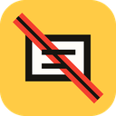

Your private filter list
Personal filters
Rules stay on this device. They are never uploaded or shared.
Add a filter
The easiest method is the extension popup's "Block something as AI" picker, which creates a filter from the page for you.
Saved filters
0 rules
No personal filters yet.